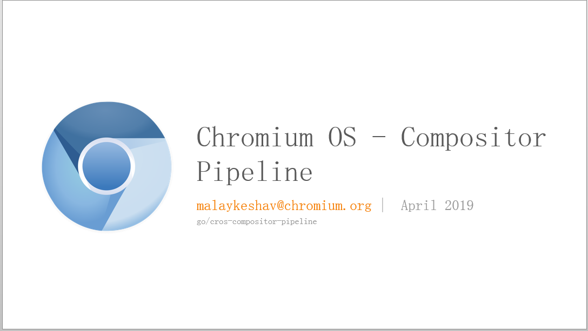
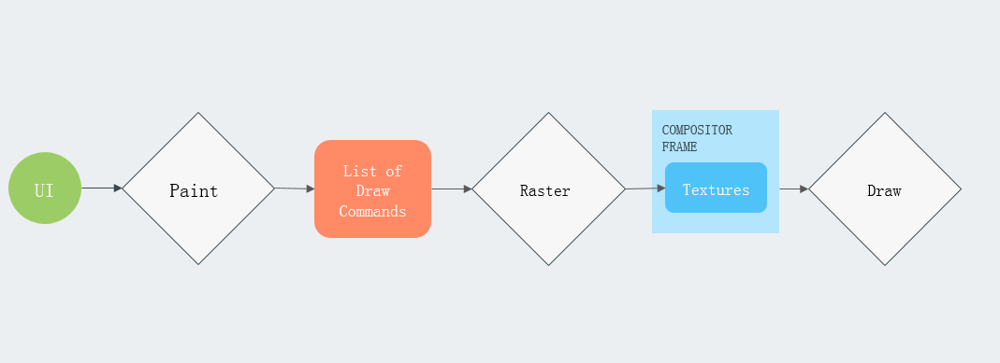
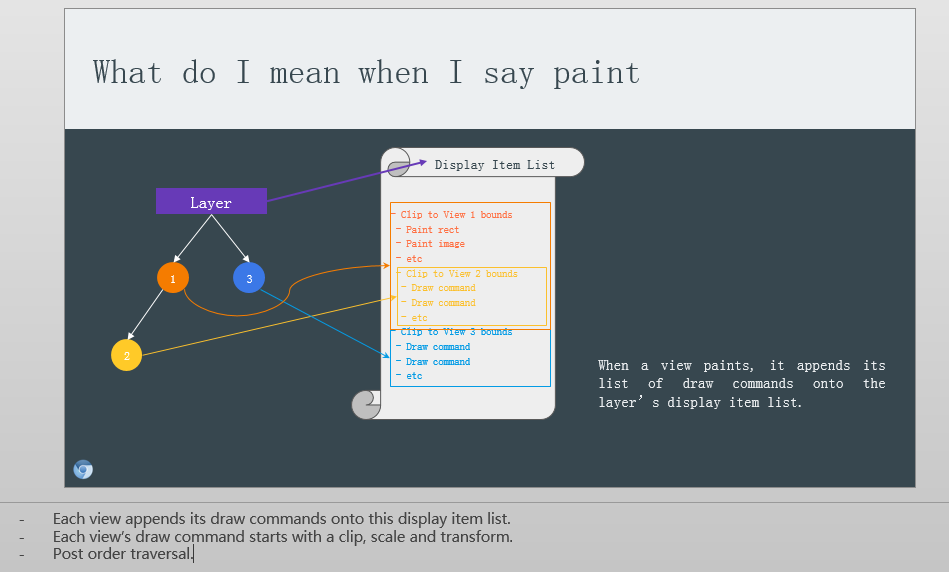
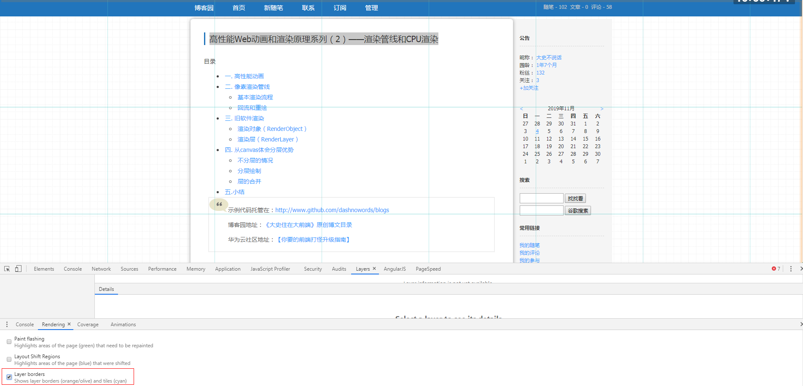
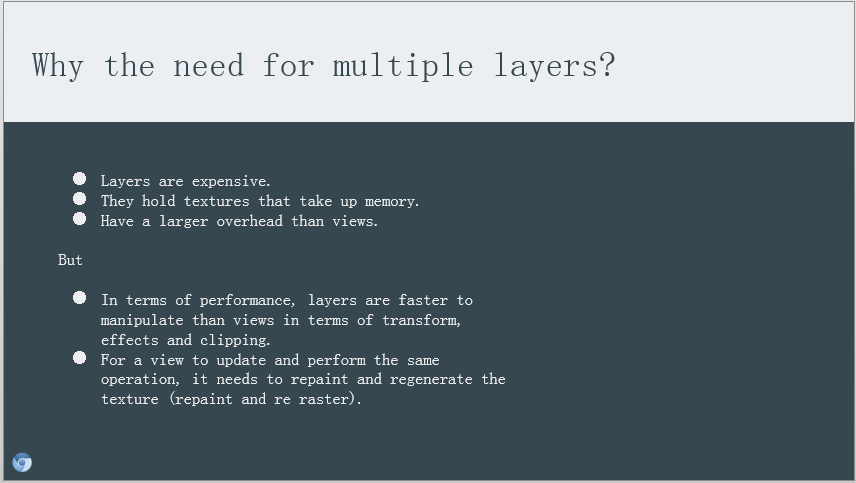
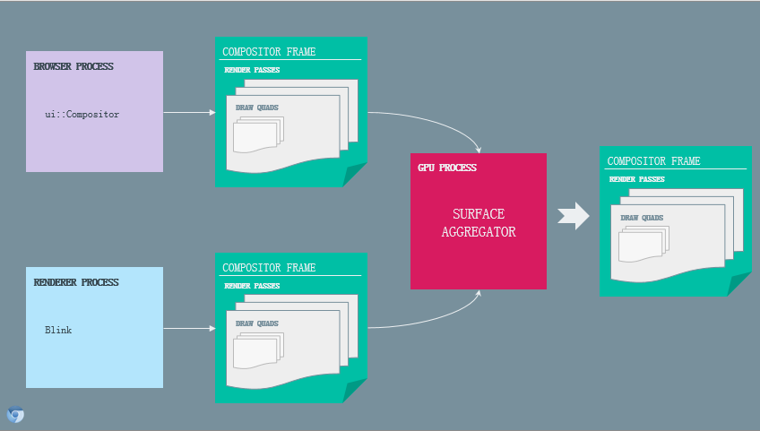

示例代码托管在：http://www.github.com/dashnowords/blogs
博客园地址：《大史住在大前端》原创博文目录
华为云社区地址：【你要的前端打怪升级指南】

[TOC]
附件PPT来自chromium官方网站开发文档。术语里的
cc指的是Chromium Compositor
一直以来都想了解浏览器合成层的运作机制，但是相关的中文资料大多比较关注框架和开发技术，这方面的资料实在是太少了，后来在chromium官方网站的文档里找到了项目组成员malaykeshav在 2019年4月的一份关于浏览器合成流水线的演讲PPT，个人感觉里面讲的非常清楚了，由于没有找到视频，有些部分只能自行理解，本文仅对关键信息做一些笔记，对此感兴趣的读者可以在文章开头的github仓库或附件中拿到这个PPT自行学习。
合成流水线，就是指浏览器处理合成层的工作流程，其基本步骤如下：

大致的流程就是说Paint环节会生成一个列表，列表里登记了页面元素的绘制指令，接着这个列表需要经过Raster光栅化处理，并在合成帧中处理纹理，最后的Draw环节才是将这些纹理图展示在浏览器内容区。
chromium中预定义了一些指定类型的UI层，大致分为：
paint渲染和后续的rasterized光栅化任务
每个层layer是由若干个views组成的，所谓paint，就是每个views将自己对应图形的绘制指令添加到层的可展示元素列表Display Item List里，这个列表会被添加到一个延迟执行的光栅化任务中，并最终生成当前层的texture纹理（可以理解为当前层的绘制结果），考虑到传输性能以及未来增量更新的需求，光栅化的结果会以tiles瓦片形式保存。在chrome中也可以看到页面瓦片化拆分的结果:


分层的优势和劣势也在此进行了说明，和之前我们主动思考的答案基本一致（暗爽一下）。
views中支持的属性包含Clip剪裁，transform变换,effect效果（如半透明或滤镜等）,mask遮罩，通常按照后序遍历的方式自底向上进行遍历处理。
clip剪裁的处理方式是在父节点和子节点之间插入一个剪裁层，用来将其子树的渲染结果剪裁到限定的范围内，然后再向上与父级进行合并；
transform变换直接作用于父节点，处理到这个节点时其子树都已经处理完毕，直接将整体应用变形即可；
effect效果一般直接作用于当前处理的节点，有时也会产生交叉依赖的场景；
PPT第40页中在介绍effect效果处理时描述了两种不同的透明度处理需求，从而引出了一个Render Surface的概念，它相当于一个临时的层，它的子树需要先绘制在这个层上，然后再向上与父节点进行合并，屏幕就是是根级的Render Surface。
Layer遍历处理输出的结果被称为Quads（从意思上理解好像就是指输出了很多个矩形方块），每个quad都持有它被绘制到目标缓冲区所需要的资源，根据它持有的资源不同可以分为：
Solid Color-固定颜色型Texture- 纹理型Tile- 瓦片型Surface- 临时绘图表面型Video - 视频帧型Render Pass - Render Surface类型的占位区，Render Surface子树处理完后填充到关联的Render Pass合成层真正的工作要开始了，主角概念Compositor Frame(合成帧)登场，它负责将quads合并绘制在一起，胶片里59-62页非常清楚地展示了合成的过程，最终输出的结果就是根节点的纹理。

chromium是多进程架构，Browser Process浏览器进程会对菜单栏等等容器部分的画面生成合成帧来输出，每个网页的Render Process渲染进程会对页面内容生成合成帧来输出，最终的结果都被共享给GPU ProcessGPU进程进行聚合并生成最终完整的合成表面，接着在Display Compositor环节将最后的位图展示在屏幕上。
胶片里并没有描述具体的光栅化的处理过程，但是layer输出的quads看起来应该是光栅化以后的结果，推测应该是处理Display Item List中的绘图指令时也和WebGL类似，经过顶点着色器和片元着色器的遍历式处理机制，并在过程中自动完成像素插值。
声明：本节内容是个人理解，仅用作技术交流，不保证对！
软件渲染和硬件渲染的区别对笔者而言一直非常抽象，只是知道基本概念。后来在【chromium开发者文档】（国内可能无法访问）中**《Compositor Thread Architecture》**这篇合成器线程架构的文章中找到了一些相关描述，也解开了笔者心中一直以来的疑惑，相关部分摘抄如下：
Texture Upload
One challenge with all these textures is that we rasterize them on the main thread of the renderer process, but need to actually get them into the GPU memory. This requires handing information about these textures (and their contents) to the impl thread, then to the GPU process, and once there, into the GL/D3D driver. Done naively, this causes us to copy a single texture over and over again, something we definitely don't want to do.
We have two tricks that we use right now to make this a bit faster. To understand them, an aside on “painting” versus “rasterization.”
- Painting is the word we use for telling webkit to dump a part of its RenderObject tree to a GraphicsContext. We can pass the painting routine a GraphicsContext implementation that executes the commands as it receives them, or we can pass it a recording context that simply writes down the commands as it receives them.
- Rasterization is the word we use for actually executing graphics context commands. We typically execute the rasterization commands with the CPU (software rendering) but could also execute them directly with the GPU using Ganesh.
- Upload: this is us actually taking the contents of a rasterized bitmap in main memory and sending it to the GPU as a texture.With these definitions in mind, we deal with texture upload with the following tricks:
- Per-tile painting: we pass WebKit paint a recording context that simply records the GraphicsContext operations into an SkPicture data structure. We can then rasterize several texture tiles from that one picture.
- SHM upload: instead of rasterizing into a void* from the renderer heap, we allocate a shared memory buffer and upload into that instead. The GPU process then issues its glTex operations using that shared memory, avoiding one texture copy.The holy grail of texture upload is “zero copy” upload. With such a scheme, we manage to get a raw pointer inside the renderer process’ sandbox to GPU memory, which we software-rasterize directly into. We can’t yet do this anywhere, but it is something we fantasize about.*
大概翻译一下，方便英语水平一般的小伙伴理解，GPU处理图片的方式是按照Texture进行贴图的，对此不熟悉的小伙伴可以查看笔者以前发的有关Three.js相关的博文。
纹理上传: 处理纹理的挑战之一就是它是在渲染进程（可以理解为单个Tab网页的进程）的主线程里进行的，但是最终需要将其放入GPU内存。这就需要将纹理数据递交给合成器线程，然后再交给GPU进程（Chromium架构里有专门的GPU进程用来专门处理和GPU之间的协作任务），最后再传递给底层的
Direct3D或OpenGL（也就是图形学的底层技术），如果只是按照常规流程来处理，就会需要一次又一次来复制生成的纹理数据，这显然不是我们想要的。 我们现在使用了两个小方法来使这个流程变得快一点。它们分别作用于painting（绘制）和rasterization（光栅化）两个阶段。
- 1号知识点！！！
Painting我们用来告诉webkit为RenderObject Tree的来生成对应的GraphicsContext。通过给painting routine（绘制流程）传递一个GraphicsContext的具体实现来执行这些已经编排好的绘制命令，也可以传递一个record context（记录上下文）只是简单地把绘图命令都记录下来。- 2号知识点！！！
Rasterization（光栅化）是指Graphics context关联的绘图命令实际被执行的过程。通常我们使用CPU（也就是软件渲染的方式）来执行光栅化任务，也可以直接使用GPU来渲染（也就是硬件渲染的方式）。- 上传：指在主线程存储区获取到光栅化以后的位图内容然后将它作为纹理上传给GPU的过程，考虑到上述已经提及的定义，上传过程是如下来处理的：
- 瓦片绘制：我们在webkit中使用
recording context来简单地记录Graphics Context的操作指令，将它存储为SkPicture类型（直接使用软件光栅化时生成的是SkBitmap类型），随后可以从一张picture里面光栅化处理得到多个纹理瓦片。- 共享内存：在软件渲染的方式中，光栅化的结果会被存储在
renderer进程的堆内存里，现在不这样搞了，我们重新分配了一块共享缓冲区，然后通过它来传递相关对象，GPU进程随后在获取纹理时直接从共享内存中获取就行了，这样就避免了数据的拷贝。 总的来说，纹理上传的过程几乎是零拷贝的。利用这样的结构，我们在renderer进程（也就是网页的渲染进程）的沙箱环境内也可以获取到指向GPU 内存的指针，而在软件光栅化的过程中，是直接将位图结果放在这里的。
- Painting: this is the process of asking Layers for their content. This is where we ask webkit to tell us what is on a layer. We might then rasterize that content into a bitmap using software, or we might do something fancier. Painting is a main thread operation.
- Drawing: this is the process of taking the layer tree and smashing it together with OpenGL onto the screen. Drawing is an impl-thread operation.
- painting:表示的过程是向Layers对象查询层内容，也就是让webkit告诉我们每一层上面到底有什么。接下来我们就可以使用软件光栅化的方式将这些内容处理为位图，也可以做一些更牛的事情，painting是一个主线程行为。
- drawing：是指将Layer中的内容用OpenGL绘制在屏幕上的过程，它是另一个线程中的操作。
概念比较多没有基础的读者可能理解起来有难度，我尝试用自己的话复述一下：
**【软件渲染】的模式下，在paint时会直接利用Graphics Context绘图上下文将结果绘制出来，在一个SkBitmap实例中保存为位图信息；【硬件渲染】**的模式下，在paint时传入一个SkPicture实例，将需要执行的绘图命令保存在里面先不执行，然后通过共享内存将它传给GPU进程，借助GPU来最终去执行绘图命令，生成多个瓦片化的位图纹理结果（OpenGL中顶点着色器向片元着色器传递数据时可以自动进行数据插值，完成光栅化的任务）。 纯软件渲染里严格说是没有合成层概念的，因为最终输出的只有一张位图，按照顺序从下往上画，和画到一个新层上再把新层贴到已有结果上其实是一样的。
不管使用哪种途径，paint动作都是得到位图数据，而最终的draw这个动作是借助OpenGL和位图数据最终把图形显示在显示器上。
所以**【硬件渲染】**就是渲染进程把要做的事情和需要的数据都写好，然后打包递给GPU让它去干活。